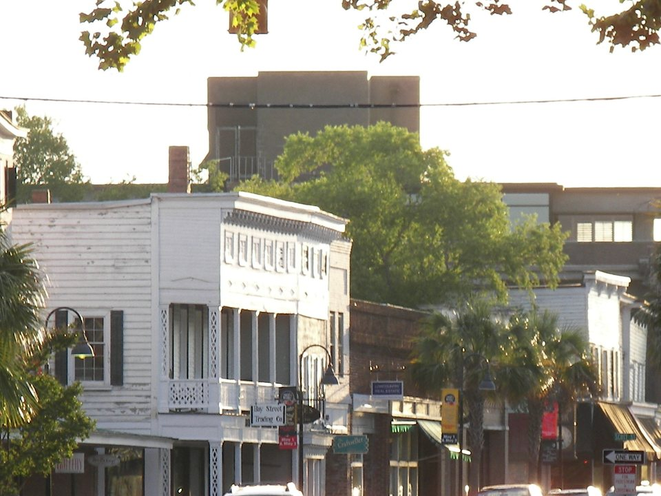

Boutique waterfront inn
Anchorage 1770
A restored 18th-century house on the Bay Street waterfront, with its own restaurant, the Ribaut Social Club. The most romantic choice; ask for a water-view room.
Official details for Anchorage 1770A short flight. Lowcountry time.
Antebellum homes under live oaks, a waterfront park made for slow evenings and salt marsh in every direction. Beaufort is small, quiet and easy, and the airport is just across the river from town.

In our plane it’s a short flight.
Where we’re staying Dinner Things to do Shopping The plan
I’ll handle the flight planning; you handle the fun planning!
Time illustration: direct distance at 150 KTAS plus 15 minutes for departure and arrival, matching the discovery page. Use ForeFlight for your actual flight plan.
Check the weekend weather at both ends → Flight category, your minimums and the crosswind on the best runway.
More in Aviation & getting around below. Crew cars change often: call the FBO before you go. How to have a rental car waiting at the FBO · Know something we missed? Tell us.
KARW, Beaufort Executive Airport (formerly Beaufort County Airport), is on Lady’s Island, a few minutes across the bridge from downtown.
The airport runs its own FBO, with 100LL, transient parking, a courtesy car and rental cars listed. Listed hours are roughly 8 AM–5:30 PM weekdays and 9 AM–4 PM Saturday, so call about Sunday departures and after-hours access. Ask about the nightly transient fee and any waiver with fuel. No live fuel price is shown.
Marine Corps Air Station Beaufort is nearby. Review the sectional, restricted areas and current NOTAMs, and expect military traffic. Check runway length and obstacles in the Chart Supplement.
Beaufort is a town of inns rather than big hotels. Rates and availability need travel dates.
A restored 18th-century house on the Bay Street waterfront, with its own restaurant, the Ribaut Social Club. The most romantic choice; ask for a water-view room.
Official details for Anchorage 1770An antebellum inn with wide verandas, a short walk from the waterfront. Classic Lowcountry charm and a good base for exploring on foot.
Official details for The Rhett House InnA well-reviewed historic inn in the heart of downtown, close to restaurants and the waterfront park. Confirm room type and parking.
Official details for The Beaufort InnA destination resort on the May River near Bluffton, with a spa, golf and riverside cottages. A splurge worth the drive; plan a car.
Official details for Montage Palmetto BluffPrices and availability for your dates, through our partner Stay22. This is an affiliate link: we may earn a commission at no cost to you. The picks above are never paid.
A small town with a strong seafood scene. Reserve the anchor dinners, especially in spring and fall.
Beaufort’s best-known restaurant: contemporary seafood with views of the river and the swing bridge. Ask for a table near the windows or on the terrace at sunset.
Official details for Saltus River GrillThe restaurant at Anchorage 1770, with a European sensibility and a Lowcountry table. Quieter and more intimate than Friday. Reserve ahead.
Official details for Ribaut Social ClubA casual, long-running Bay Street spot backing onto the waterfront park. Easy for lunch between walks. For a dressier alternative, try Wren Bistro & Bar.
Official details for PlumsBeaufort rewards an unhurried pace. Pick one outing beyond town and let the rest of the weekend be slow.
Antebellum homes, live oaks and Spanish moss, many of them film locations. End at the Henry C. Chambers Waterfront Park, with its swings facing the river: the best seat in town at sunset.
A relaxed way to hear the town’s history from a local guide. Tours leave from Bay Street; Southurn Rose Carriage Tours is one operator. Book ahead in busy seasons.
A wild barrier-island beach about 30 minutes away, with marsh boardwalks, maritime forest and a historic lighthouse. Check whether the lighthouse is open for climbing on your dates.
One of the first schools for formerly enslaved people, and part of the Reconstruction Era National Historical Park. A meaningful stop on the drive to Hunting Island. Check hours.
A flat rail-trail along the marsh, made for an easy walk or bike ride. Ask locally about bike rentals.
The history of the Marine Corps recruit depot. It is on an active military base, so check current visitor access rules and ID requirements before going.
Beaufort’s romance is mostly outdoors: the waterfront swings, a carriage ride, a sunset boat outing from the downtown marina. For a massage, ask your inn which local spas it recommends or whether it can arrange in-room treatments.
Visit Beaufort’s own romantic-getaway itinerary includes spa ideas and current openings.
Visit Beaufort romantic getaway ideasBay Street is the heart of it: a few walkable blocks of galleries, boutiques and bookshops.
Independent boutiques, home goods, Lowcountry art and a bookshop or two, all within a short stroll of the waterfront park.
Marsh landscapes, sweetgrass baskets and Gullah art. A meaningful souvenir that is genuinely from here.
A family shrimp dock on St. Helena Island since 1948. Fresh local shrimp, plus grits, hot sauce, spices and Frogmore Stew fixings to take home. Ask them to pack shrimp on ice for the flight.
Website & map for Gay Fish CompanyHours change with the season; check before you go. No paid placements.
This prototype links to the destination calendar. It does not yet match events to your travel dates.
The town’s big summer celebration on the waterfront, with boats, music and events. Lively, hot and busy; book lodging early.
A celebration of Beaufort’s best-known writer and Southern literature, with readings and events around town.
Mild weather, azaleas in spring and comfortable evenings on the water. Summer is hot, humid and buggy on the marsh.
Check the destination calendar when choosing a weekend, and confirm dates and tickets with the organizer.
A sample Friday–Sunday weekend: the historic town, one beach and history day, and two waterfront dinners. No bookings or availability confirmed.
Land at KARW mid-morning; borrow the courtesy car or arrange a ride across the river.
Lunch on Bay Street, then a horse-drawn carriage tour of the historic district.
The waterfront park swings, then back to the FBO well before it closes.
Land at KARW, subject to the actual flight plan, and drive the few minutes into town.
Lunch at Plums, a carriage tour, then check in and rest on the veranda.
Sunset on the waterfront park swings, then dinner at Saltus River Grill.
Drive out to the Penn Center, then on to Hunting Island for the beach and marsh boardwalks.
Back to town to browse Bay Street, or walk part of the Spanish Moss Trail.
Dinner at the Ribaut Social Club.
Breakfast at your inn and a last walk under the oaks.
Return the car and allow time at the FBO, especially if it keeps shorter weekend hours.
Let weather and your flight plan set the departure.
The Spanish Moss Trail by bike or on foot.
The Parris Island Museum (check base access) or more beach time at Hunting Island.
A sunset boat outing from the downtown marina.
This guide is part of a multi-stop flying trip. Set your dates and aircraft, then swap stops to make it your own.
These details make the difference between an appealing list and a usable getaway.
Inn first (there are few rooms in town), then ground transport and the two dinners.
Summer brings heat, afternoon storms and no-see-ums on the marsh. Bring insect repellent.
Weekend hours are shorter than at bigger airports. Confirm fuel and access for your departure time.
Inn rates, tours and restaurant hours are date-dependent. No availability or live price is implied here.
Picks and links reviewed by WingAway Weekends. Hours, prices, menus and availability change often, so confirm directly with each place before booking. Spotted something out of date, or have a favorite we missed? Email us at hello@wingawayweekends.com.
WingAway Weekends helps you discover the destination. Use ForeFlight and current official aviation information for route, performance, weather, NOTAMs and preflight decisions. Flight planning and PIC responsibility stay with the pilot.
One fly-in weekend, a Fly to Lunch pick and the newest guides, about once a month.
Free. Unsubscribe anytime.